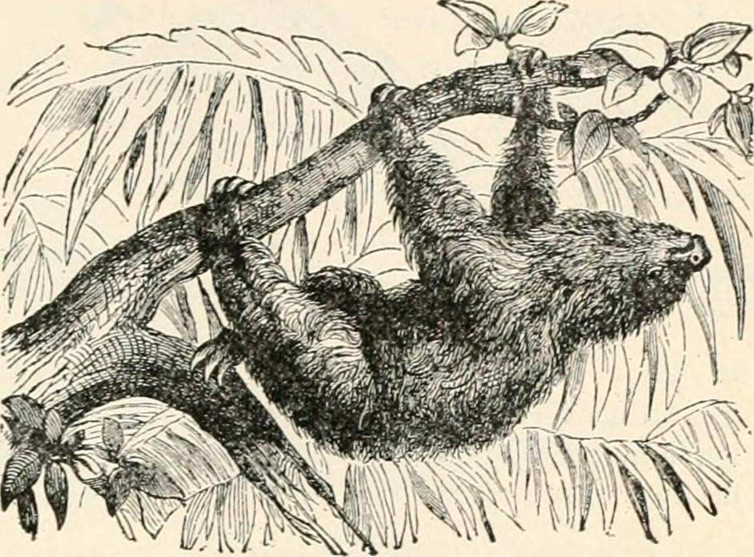

Sloths
Sloths are mammals classified in the families Megalonychidae (two-toed sloths) and Bradypodidae (three-toed sloths), including six extant species. They are named after the capital sin of sloth because they seem slow and lazy at first glance; however, their usual idleness is due to metabolic adaptations for conserving energy.
Aside from their surprising speed during emergency flights from predators, other notable traits of sloths include their strong body and their ability to host symbiotic algae on their furs.
Three-toed sloth
The three-toed sloths are arboreal neotropical mammals (also known as “three-fingered” sloths). Famously slow-moving, a sloth travels at an average speed of 0.24 km/h. Three-toed sloths are about the size of a small dog or a large cat, with the head and body having a combined length around 45 cm and a weight of 3.5–4.5 kg. Unlike the two-toed sloths, they also have short tails of 6–7 cm, and they have three clawed toes on each limb.
All sloths have three digits on their hindlimbs; the difference is found in the number of digits on the forelimbs; thus they are sometimes referred to as three-fingered sloths.